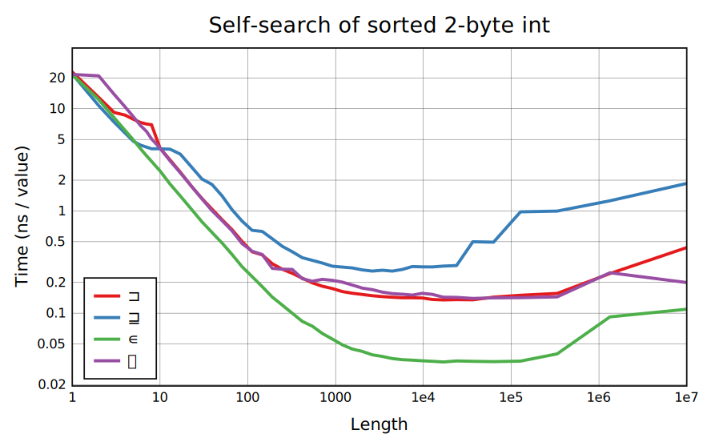
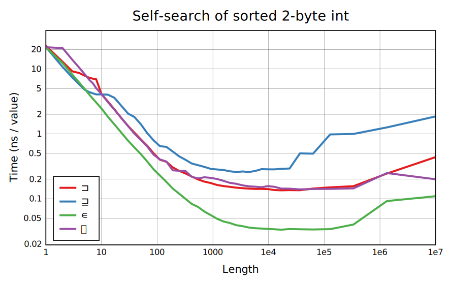

CBQN self-search functions are well optimized on numeric sizes and booleans, with a variety of methods designed for both general and special cases.
The shuffled pairs test tries to avoid falling into easy special cases: there are many unique elements, with unpredictable repetition. When the length is larger than the type range, each value has to be repeated more than twice, and at least one possible value is left out to prevent any function from seeing the entire range and stopping early.
Cases with a small argument (bound of 8 to 20 depending on type and function) are handled with all-pairs comparisons that use the comparison branchlessly, although a SIMD implementation could be faster. 1-byte and 2-byte cases use a lookup table otherwise, with sparse initialization for the 2-byte table for smaller sizes giving the corner at 1000 or a little higher. ∊ and ⍷ use a bit table in SIMD registers, which lets them quickly skip past values that aren't new (here ⍷ has dedicated code instead of calling ∊⊸/). Both ⊒ and ⊐ are slowed down at large sizes because they need a 4-byte instead of 1-byte table, and there are some bumps in ⊐ because it has to branch on table lookups. 1-byte ⊐ is implemented as ⍷⊸⊐ for long arrays.
4- and 8-byte cells have specialized hash tables. 4-byte cases other than ⊐ also have a fallback using two rounds of radix moves plus a table on the remaining two bytes, keeping the cost bounded at sizes above 1e5. It's slower than sorting because the radix moves need to be undone at the end, so a self-search function takes a total of 4 moves plus a table lookup, while sorting only needs 4 moves.
Also throwing in the one benchmark on booleans. These all have simple fast implementations, except ⊒, which is related to +`. It's implemented with branchless scalar code that could be faster if vectorized.
The unique-values test is mainly relevant for larger types. But in 1-byte values we can see that the SIMD bit table shortcuts if all values in the range are seen, and in the 2-byte table we see that Classify slows down with more uniques as branching becomes expensive. The stair-step of 1-byte ⊐ comes from vector binary search used by Index-of in ⍷⊸⊐.
Resizable hash tables can use less space for inputs that have few unique values, and also end up with cheaper branch prediction. For the 4-byte tables with a radix fallback, the size here is right on the boundary where it kicks in, so that they end up doing poorly on the full-range input.
Particularly for 4-byte values, range-checking can be useful since it allows a lookup table to be used instead of a hash table, but CBQN doesn't try this now.
Random values end up looking mostly the same as shuffled pairs. This benchmark uses the full range, so for 1-byte values the effect of shortcutting is visible. It also means 4-byte and 8-byte floats are nearly all unique, which makes branches cheap but means a full-size hash table is needed.
In a sorted list, all instances of a given value are next to each other. CBQN has code to handle inputs with a sorted flag fast using differences, roughly 1(-‚ä∏‚Üì‚ↂÜì)ùï©. Because it's not blocked it has minor cache trouble with longer inputs. And shortcutting can be faster sometimes, but unlike the random case it wouldn't be very effective here, as the last value comes near the end. For small ranges (particularly short 1-byte arguments) it would be faster to use binary searches to find positions where values change.
The overhead from ⍷ relative to ∊ comes from filtering with Replicate, and is artificially low for floats: they're always unique here so it just returns ùï©.


 
